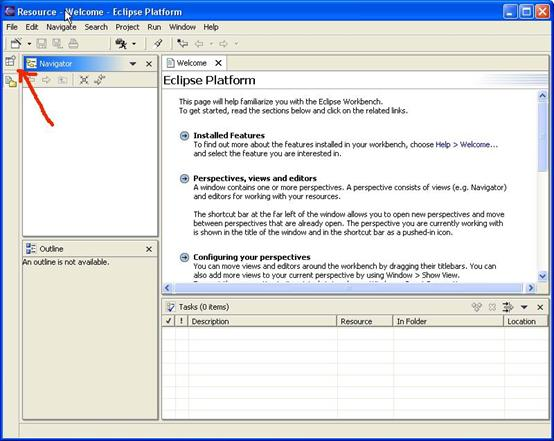
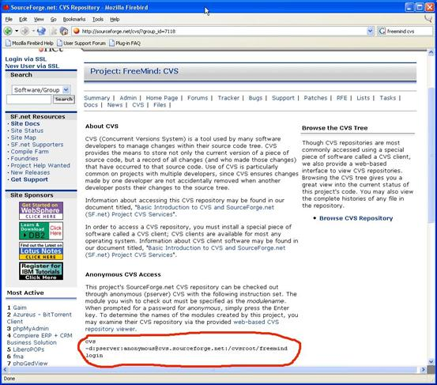
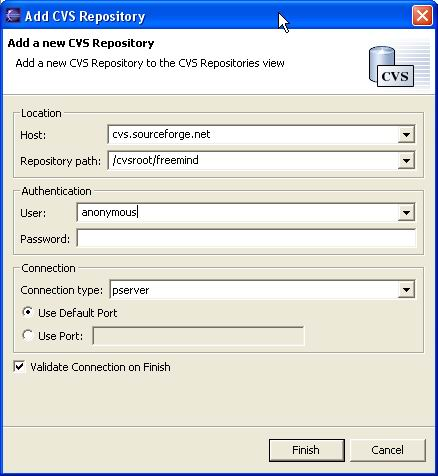
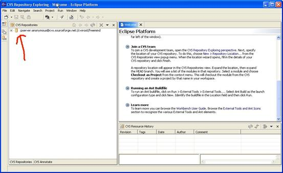

First thing we want to do is to create (or switch to) a “CVS perspective in Eclipse.
Click on the following icon:

To add this new perspective. This is what it looks like:
Now let's connect to Freemind's CVS (of course you have to be online for this to work).
From Freemind's CVS page (http://sourceforge.net/cvs/?group_id=7118) you will be able to read the parameters you need to connect to the CVS repository:

but here is a picture that shows you how it is done (be sure you are in the CVS perspective, right click in the CVS Repositories pane and select New):

When you have done this you will see the CVS Repositories pane in Eclipse's CVS perspective looking like this:

Select the freemind entry under the CVSROOT entry as in the following picture:

Now right click on the freemind entry and select “Check Out” from the resulting box. Eclipse will work (network and disk activity and some indication on the bottom of Eclipse's window) for some time (a few seconds if well connected) and will download Freemind's source to an Eclipse workspace in the default directory.